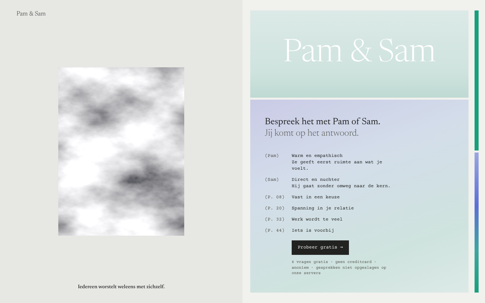
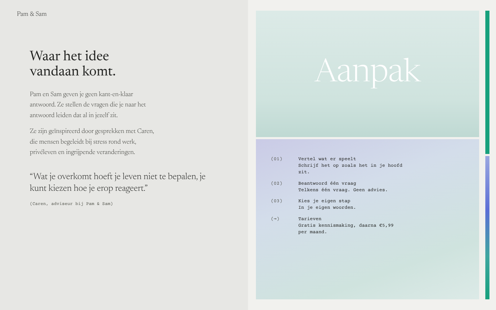
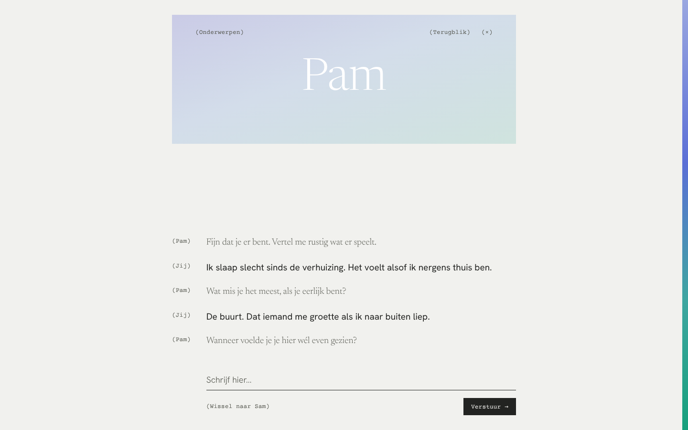
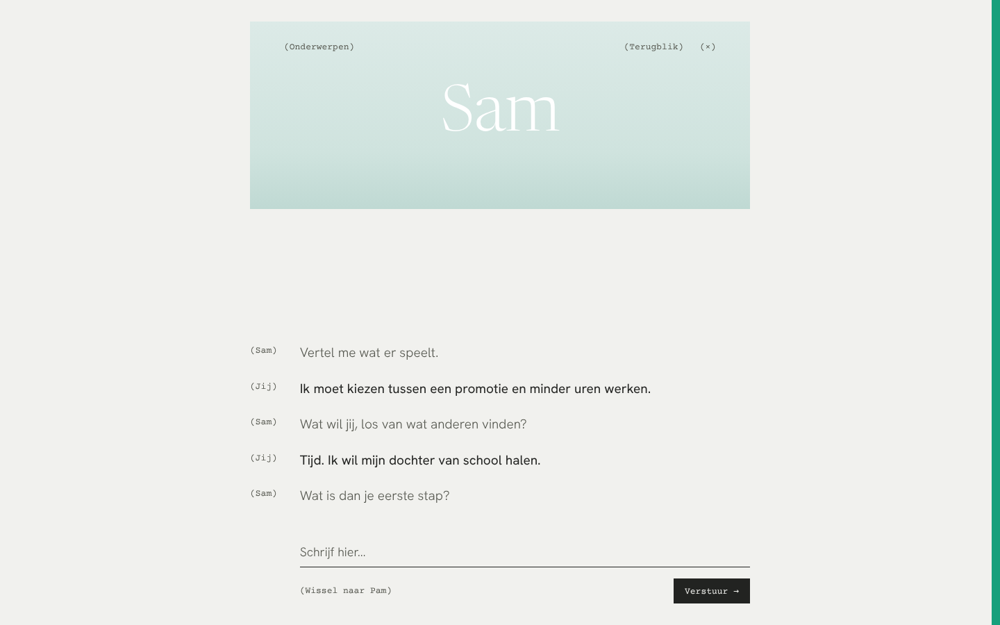
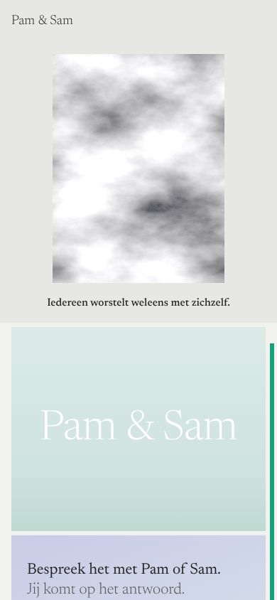
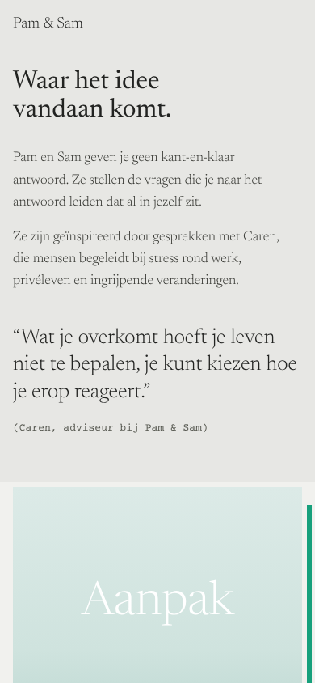
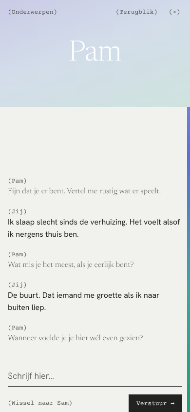
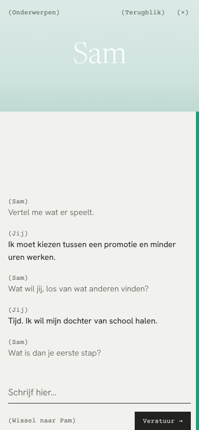

De site als een opengeslagen tijdschrift. Links één beeld op grijs papier, rechts een gekleurd vlak met een gefluisterde titel en een inhoudsopgave in typemachineletter. Pam en Sam herken je aan de strook aan de rand, zoals een tabblad in een boek.


Op de homepage is de inhoudsopgave de navigatie: elke regel is een deur. De wolk is een plaatshouder voor een echte foto van de lucht.


In de kamer staat de naam van Pam of Sam als gefluisterd woord in het vlak. Jouw tekst staat donker en voorop, hun woorden zacht.




Op de telefoon worden de twee pagina's één kolom; de strook aan de rand blijft.